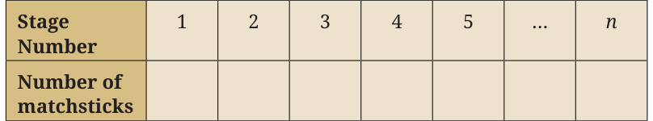

<!DOCTYPE html>
<html lang="en">
<head>
<meta charset="UTF-8">
<meta name="viewport" content="width=device-width,initial-scale=1">
<title>Exercise 2.6 — Introduction to Linear Polynomials</title>
<meta name="description" content="Class 9 Mathematics · Introduction to Linear Polynomials · Exercise 2.6">
<link rel="icon" href="data:image/svg+xml,<svg xmlns='http://www.w3.org/2000/svg' viewBox='0 0 100 100'><text y='.9em' font-size='90'>📘</text></svg>">
<link rel="stylesheet" href="../../../assets/book.css">
<link rel="stylesheet" href="https://cdn.jsdelivr.net/npm/katex@0.16.11/dist/katex.min.css" crossorigin="anonymous">
</head>
<body>
<header class="topbar">
<div class="topbar-in">
  <div class="crumb">
    <span class="c1"><a href="../../../index.html">Library</a> · <a href="../../index.html">Class 9 Mathematics</a></span>
    <span class="c2">Introduction to Linear Polynomials · Exercise 2.6</span>
  </div>
  <a class="tb-btn" data-nav="prev" href="../../02-introduction-to-linear-polynomials/11-visualising-linear-relationships-2.6/index.html" title="2.6 Visualising linear relationships">←</a>
  <details class="drawer"><summary class="tb-btn" title="Sections in this chapter">☰</summary>
<div class="drawer-panel"><div class="dh">Introduction to Linear Polynomials</div><a href="../01-introduction-2.1/index.html">2.1 Introduction</a><a href="../02-exercise-2.1/index.html">Exercise 2.1</a><a href="../03-linear-polynomials-2.2/index.html">2.2 Linear Polynomials</a><a href="../04-exercise-2.2/index.html">Exercise 2.2</a><a href="../05-exploring-linear-patterns-2.3/index.html">2.3 Exploring linear patterns</a><a href="../06-exercise-2.3/index.html">Exercise 2.3</a><a href="../07-linear-growth-and-linear-decay-2.4/index.html">2.4 Linear growth and linear decay</a><a href="../08-exercise-2.4/index.html">Exercise 2.4</a><a href="../09-linear-relationships-2.5/index.html">2.5 Linear Relationships</a><a href="../10-exercise-2.5/index.html">Exercise 2.5</a><a href="../11-visualising-linear-relationships-2.6/index.html">2.6 Visualising linear relationships</a><a href="../12-exercise-2.6/index.html" aria-current="page">Exercise 2.6</a></div></details>
  <a class="tb-btn" data-nav="next" href="../../03-the-world-of-numbers/01-the-dawn-of-mathematics-the-human-need-to-count-3.1/index.html" title="3.1 The Dawn of Mathematics: The Human Need to Count">→</a>
  <button class="tb-btn" data-theme-toggle title="Toggle light / dark" aria-label="Toggle light or dark theme">◐</button>
</div>
<div class="progress"><span style="width:19.8%"></span></div>
</header>
<main class="wrap">
<div class="sec-head">
  <p class="eyebrow"><a href="../index.html">Chapter 2 · Introduction to Linear Polynomials</a></p>
  <h1>Exercise 2.6</h1>
  <p class="sec-meta">Textbook pages 21–25 · 4 figures</p>
</div>
<article class="prose">
<p>This means that the line cuts the y-axis at a distance of 2 units from the origin in the negative direction. After observing the graphs in Figures 2.8 to 2.14, we may conclude the following:</p>
<ul class="qlist">
<li><span class="mk">(i)</span><span class="lt">In the equation \(y =\) ax \(+ b\), a represents the slope of the line</span></li>
</ul>
<p>and b represents the y-intercept.</p>
<ul class="qlist">
<li><span class="mk">(ii)</span><span class="lt">If we change the values of a, keeping b fixed, the slope of the</span></li>
</ul>
<p>line changes while the y-intercept remains fixed.</p>
<ul class="qlist">
<li><span class="mk">(iii)</span><span class="lt">If we change the values of b keeping the value of a fixed, the</span></li>
</ul>
<p>lines shift but remain parallel to the original line. Thus, lines with equal slopes but different y-intercepts are parallel to each other.</p>
<figure class="fig"></figure>
<ul class="qlist">
<li><span class="mk">1.</span><span class="lt">Draw the graphs of the following sets of lines. In each case, reflect</span></li>
</ul>
<p>on the role of ‘a’ and ‘b’.</p>
<ul class="qlist">
<li><span class="mk">(i)</span><span class="lt">\(y = 4x\), \(y = 2x\), \(y = x\)</span></li>
<li><span class="mk">(ii)</span><span class="lt">\(y = - 6x\), \(y = - 3x\), \(y = - x\)</span></li>
<li><span class="mk">(iii)</span><span class="lt">\(y = 5x\), \(y = - 5x\)</span></li>
<li><span class="mk">(iv)</span><span class="lt">\(y = 3x - 1\), \(y = 3x\), \(y = 3x + 1\)</span></li>
<li><span class="mk">(v)</span><span class="lt">\(y = - 2x - 3\), \(y = - 2x\), \(y = 2x + 3\)</span></li>
</ul>
<figure class="fig"></figure>
<ul class="qlist">
<li><span class="mk">1.</span><span class="lt">Write a polynomial of degree 3 in the variable x, in which the</span></li>
</ul>
<p>coefficient of the x term is \(- 7\).</p>
<ul class="qlist">
<li><span class="mk">2.</span><span class="lt">Find the values of the following polynomials at the indicated</span></li>
</ul>
<p>values of the variables.</p>
<ul class="qlist">
<li><span class="mk">(i)</span><span class="lt">\(5x - 3x + 7\) if \(x = 1\)</span></li>
</ul>
<ul class="qlist">
<li><span class="mk">(ii)</span><span class="lt">\(4t - t + 6\) if \(t = a\)</span></li>
</ul>
<ul class="qlist">
<li><span class="mk">3.</span><span class="lt">If we multiply a number by \(\frac{5}{2}\) and add \(\frac{2}{3}\) to the product, we get</span></li>
</ul>
<p>\(\frac{ - 7}{12}\) . Find the number.</p>
<ul class="qlist">
<li><span class="mk">4.</span><span class="lt">A positive number is 5 times another number. If 21 is added to</span></li>
</ul>
<p>both the numbers, then one of the new numbers becomes twice the other new number. What are the numbers?</p>
<ul class="qlist">
<li><span class="mk">5.</span><span class="lt">If you have `800 and you save `250 every month, find the</span></li>
</ul>
<p>amount you have after (i) 6 months (ii) 2 years. Express this as a linear pattern. *6. The digits of a two-digit number differ by 3. If the digits are interchanged, and the resulting number is added to the original number, we get 143. Find both the numbers. *7. Draw the graph of the following equations, and identify their slopes and y-intercepts. Also, find the coordinates of the points where these lines cut the y-axis.</p>
<ul class="qlist">
<li><span class="mk">(i)</span><span class="lt">\(y = - 3x + 4\)</span></li>
<li><span class="mk">(ii)</span><span class="lt">\(2y = 4x + 7\)</span></li>
<li><span class="mk">(iii)</span><span class="lt">\(5y = 6x - 10\)</span></li>
<li><span class="mk">(iv)</span><span class="lt">\(3y = 6x - 11\)</span></li>
</ul>
<p>Are any of the lines parallel? *8. If the temperature of a liquid can be measured in Kelvin units as x K and in Fahrenheit units as \(y ^{\circ} F\), the relation between the two systems of measurement of temperature is given by the linear</p>
<div class="mathblock"><p>equation \(y = \frac{9}{5}\) (x \(- 273) + 32\).</p></div>
<ul class="qlist">
<li><span class="mk">(i)</span><span class="lt">Find the temperature of the liquid in Fahrenheit if the</span></li>
</ul>
<p>temperature of the liquid is 313 K.</p>
<ul class="qlist">
<li><span class="mk">(ii)</span><span class="lt">If the temperature is \(158 ^{\circ} F\), then find the temperature in</span></li>
</ul>
<p>Kelvin.</p>
<p>*9. The work done by a body on the application of a constant force is the product of the constant force and the distance travelled by the body in the direction of the force. Express this in the form of a linear equation in two variables (work w and distance d), and draw its graph by taking the constant force as 3 units. What is</p>
<p>the work done when the distance travelled is 2 units? Verify it by plotting it on the graph. *10. The graph of a linear polynomial p(x) passes through the points (1, 5) and (3, 11).</p>
<ul class="qlist">
<li><span class="mk">(i)</span><span class="lt">Find the polynomial p(x).</span></li>
<li><span class="mk">(ii)</span><span class="lt">Find the coordinates where the graph of p(x) cuts the axes.</span></li>
<li><span class="mk">(iii)</span><span class="lt">Draw the graph of p(x) and verify your answers.</span></li>
</ul>
<p>*11. Let p(x) = ax \(+ b\) and q(x) = cx \(+ d\) be two linear polynomials such that:</p>
<ul class="qlist">
<li><span class="mk">(i)</span><span class="lt">\(p(0) = 5\).</span></li>
<li><span class="mk">(ii)</span><span class="lt">The polynomial p(x) - q(x) cuts the x-axis at (3, 0).</span></li>
<li><span class="mk">(iii)</span><span class="lt">The sum p(x) + q(x) is equal to \(6x + 4\) for all real x.</span></li>
</ul>
<p>Find the polynomials p(x) and q(x).</p>
<p>*12. Look at the first three stages of a growing pattern of hexagons made using matchsticks. A new hexagon gets added at every stage which shares a side with the last hexagon of the previous stage.</p>
<figure class="fig"></figure>
<p>Stage 1 Stage 2 Stage 3</p>
<ul class="qlist">
<li><span class="mk">(i)</span><span class="lt">Draw the next two stages of the pattern. How many</span></li>
</ul>
<p>matchsticks will be required at these stages?</p>
<ul class="qlist">
<li><span class="mk">(ii)</span><span class="lt">Complete the following table.</span></li>
</ul>
<figure class="fig table-fig wide"></figure>
<ul class="qlist">
<li><span class="mk">(iii)</span><span class="lt">Find a rule to determine the number of matchsticks required</span></li>
</ul>
<p>for the n stage.</p>
<p class="lead">th</p>
<ul class="qlist">
<li><span class="mk">(iv)</span><span class="lt">How many matchsticks will be required for the 15th stage of</span></li>
</ul>
<p>the pattern?</p>
<ul class="qlist">
<li><span class="mk">(v)</span><span class="lt">Can 200 matchsticks form a stage in this pattern? Justify</span></li>
</ul>
<p>your answer.</p>
<p>*13. Let p(x) = ax \(+ b\) and q(x) = cx \(+ d\) be two linear polynomials such that:</p>
<ul class="qlist">
<li><span class="mk">(i)</span><span class="lt">The graph of p(x) passes through the points (2, 3) and (6, 11).</span></li>
<li><span class="mk">(ii)</span><span class="lt">The graph of q(x) passes through the point (4, \(- 1)\).</span></li>
<li><span class="mk">(iii)</span><span class="lt">The graph of q(x) is parallel to the graph of p(x).</span></li>
</ul>
<p>Find the polynomials p(x) and q(x). Also, find the coordinates of the point where these lines meet the x-axis.</p>
<p>*14. What do all linear functions of the form f(x) = ax \(+ a\), \(a &gt; 0\), have in common?</p>
<p>Chapter summary</p>
<p>z An algebraic expression combines numbers, variables, and</p>
<p>­operation symbols. For example, \(2x + 5xy - 3y\) is an algebraic</p>
<p>­expression in the variables x and y. 2x , 5xy and \(- 3y\) are the terms of the algebraic expression, and the numbers 2, 5 and \(- 3\) are coefficients of the terms. z Univariate Polynomials are algebraic expressions in one</p>
<p>­variable. Thus \(x + 5x + 3\) and \(3y - 4y + 5\) are univariate polynomials in x and y, respectively. The highest power of the variable in a univariate polynomial is called its degree. Thus,</p>
<p>\(x + 5x + 3\) is ­of degree 2 while \(3y - 4y + 5\) is of degree 3. z A polynomial of degree one is called a linear polynomial. Hence, \(2x + 3\) and \(5 - 4y\) are linear polynomials in the variables x and y, respectively. z Linear growth refers to a pattern in which a quantity increases by a fixed amount over equal intervals. In contrast, linear ­decay describes a pattern in which a quantity decreases by a fixed amount over equal intervals.</p>
<p>z A linear pattern is a sequence of numbers where the ­difference between consecutive terms is constant. z A linear relationship between two variables x and y is ­represented by a straight line \(y =\) ax \(+ b\). The slope of this line is</p>
<ul class="qlist">
<li><span class="mk">a.</span><span class="lt">The ­constant b is called the y-intercept which is the distance</span></li>
</ul>
<p>from the origin where the line cuts the y-axis. When \(b = 0\), the equation of the line becomes \(y =\) ax and the line passes through the origin. z Linear growth is represented by a straight line with positive slope and linear decay is represented by a straight line with ­negative slope.</p>
<p>Parallel lines are of the form \(y =\) ax \(+ b\), where the slope a is fixed while b, the y-intercept, varies.</p>
</article>
<nav class="pager"><a class="" data-nav="prev" href="../../02-introduction-to-linear-polynomials/11-visualising-linear-relationships-2.6/index.html"><span class="dir">← Previous</span><span class="t">2.6 Visualising linear relationships</span><span class="ch">Introduction to Linear Polynomials</span></a><a class="nx" data-nav="next" href="../../03-the-world-of-numbers/01-the-dawn-of-mathematics-the-human-need-to-count-3.1/index.html"><span class="dir">Next →</span><span class="t">3.1 The Dawn of Mathematics: The Human Need to Count</span><span class="ch">The World of Numbers</span></a></nav>
</main><footer class="site">Generated from the source textbook PDFs · text, figures and exercises belong to their respective publishers.</footer><script defer src="https://cdn.jsdelivr.net/npm/katex@0.16.11/dist/katex.min.js" crossorigin="anonymous"></script>
<script defer src="https://cdn.jsdelivr.net/npm/katex@0.16.11/dist/contrib/auto-render.min.js" crossorigin="anonymous"
  onload="renderMathInElement(document.body,{delimiters:[
    {left:'\\(',right:'\\)',display:false},
    {left:'$$',right:'$$',display:true},
    {left:'\\[',right:'\\]',display:true}],throwOnError:false,ignoredTags:['script','noscript','style','textarea','pre','code']})"></script>
<script src="../../../assets/book.js"></script>
<script defer src="../../../../assets/search.js?v=1789782769"></script>
<script defer src="../../../../assets/screenshot.js?v=1789782769"></script>
</body>
</html>
